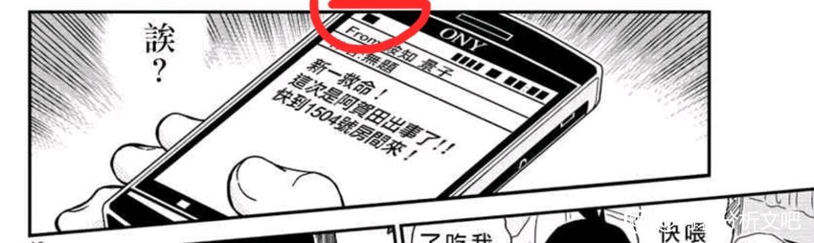

在看九九玉生烟的伦敦篇新解的内容中，提到了红修篇，其中一张图片一下就让我看得一激灵，九九大提到了「こい」、「くれ」、「ない」可以译为“恋”、“黄”、“无”，其实这里「くれない」是可以直接当否定词使用的，常用于第一人称和第三人称，而 「こいくれないのよちゅう」可以完全正确的翻译为“无法恋爱的预兆”，用在这张“世纪之吻”的图这里，我认为这是相当值得注意的一件事。
然后是其它的同音翻译，首先是「せんごう」可以意为“先攻”“先行”，而实际上书面日语里表示“鲜红”还有其它类似发音「せんく」，这个是不含“先行”语境的，「てんじょう」确实能另译作“天性”、“本能”，不过把「せんこうのてんじょう」译成“先攻的本能”或是“先行的天性”，我不太清楚能否套入某个角色，不过「てんじょう」确实与「てんし」谐音，即“天使”，也可以看作是把「てんし」和“angel”的发音各拆了½取得的词汇，但不知道会否有点过度解读。

2024-05-31 05:18 | 我就是会长HHDX:但是“先行的天使”这一翻译，我觉得会非常，非常契合红修篇在名柯中的位置，甚至可以说不论结局如何都是是完美的映衬。2024-05-31 10:51 | 剑锋寒光:日语天井这个词本身是不是也有“事物发展到顶点无法继续向上”的意思在？中文的天花板和英文的ceiling都有这个引申义2024-05-31 10:53 | 我就是会长HHDX:回复 剑锋寒光 :对，“天井”日语里可以直接指“天花板”
还有高人
而对于下图的「ぐれんのまもの」我有些拿不定主意，因为我目前的几个假设：
1、「ぐれん」确实可以直译为“愚蠢的人”，但是这样「ぐれんのまもの」就会直译为“愚蠢的魔物”，那么大家当然明白这指的是小兰，但我实在不认为青山会直接这样辱骂自己笔下的一个角色，所以这种翻译请容许我忽略。
2、第二个是让我比较在意的，首先，「まもの」其实是可以译为“守护的事物”，“保护的事物”的，或者直接取其谓语格“保护”，“守护”也没有任何问题，而「ぐれん」在日语中常常表示的是“红莲地狱”之意，「ぐれんのまもの」可以译为“来自红莲地狱的守护”，这个我比较在意的原因是因为“守护”二字，这个和红修篇的案件其实以及提到的电影是有关联性的，我目前知道的唯一一个明确带上“地狱”标签还会守护他人的人只有“宫野艾莲娜”，但是我觉得这个标签同时非常适用于“灰原哀”，因为她也是从酒厂（地狱）逃出来守护他人的人，而“红莲”这个意向实在是与“火”有太多的相关，所以这个翻译我比较在意。
1、「ぐれん」确实可以直译为“愚蠢的人”，但是这样「ぐれんのまもの」就会直译为“愚蠢的魔物”，那么大家当然明白这指的是小兰，但我实在不认为青山会直接这样辱骂自己笔下的一个角色，所以这种翻译请容许我忽略。
2、第二个是让我比较在意的，首先，「まもの」其实是可以译为“守护的事物”，“保护的事物”的，或者直接取其谓语格“保护”，“守护”也没有任何问题，而「ぐれん」在日语中常常表示的是“红莲地狱”之意，「ぐれんのまもの」可以译为“来自红莲地狱的守护”，这个我比较在意的原因是因为“守护”二字，这个和红修篇的案件其实以及提到的电影是有关联性的，我目前知道的唯一一个明确带上“地狱”标签还会守护他人的人只有“宫野艾莲娜”，但是我觉得这个标签同时非常适用于“灰原哀”，因为她也是从酒厂（地狱）逃出来守护他人的人，而“红莲”这个意向实在是与“火”有太多的相关，所以这个翻译我比较在意。
2024-05-31 04:29 | 我就是会长HHDX:当然，“守护”的标准说法是「守り」音「まもり」与「まもの」是有差别的。
才发现放到求助去了，抱歉。
B站的南英说过这个点，“无法恋爱的预感”
2024-05-31 04:44 | 我就是会长HHDX:那感觉就是柯哀所见略同了哈哈。2024-05-31 14:42 | 双鱼Sandysweet:回复 我就是会长HHDX :因为这个up主也会日语，所以就解析了这一话的标题。我听完之后才恍然大悟，难怪这一篇的TV标题直接叫“恋红篇”
坐等日语大佬
（接上）3、因为之前「てんじょう」（te n jou）谐音拆过一次字了，所以我试着把「まもの」（ma mo no）也拆一拆，「まもの」谐音「まもり」（ma mo ri）➡「毛利」（mo u ri），毛利兰？！“地狱的毛利兰”？这么拆挺有意思，好像还确实暗示了毛利兰的撒旦论，但是感觉有点拆过头了，所以有了第四点。
4、「まもの」和“memory”谐音，如果译为“红莲的记忆”，或者“地狱的回忆”，这里会又衍生出几种推测：（1）从未来视角，如果新一和毛利兰分别，那么红修篇会否成为一段“地狱的回忆”？（2）我不太记得这一话是否有灰原哀叮嘱新一的漫画片段了（好像是有的），这里是否对应的其实是灰原哀的叮咛？
4、「まもの」和“memory”谐音，如果译为“红莲的记忆”，或者“地狱的回忆”，这里会又衍生出几种推测：（1）从未来视角，如果新一和毛利兰分别，那么红修篇会否成为一段“地狱的回忆”？（2）我不太记得这一话是否有灰原哀叮嘱新一的漫画片段了（好像是有的），这里是否对应的其实是灰原哀的叮咛？
这个小标题确实发散面太广了，但我还是倾向于一半名词一半动词的译法，“来自地狱的守护”比较合心（尽管我觉得还是没有译的很准确），因为这样整个红修篇的小标题全都会是一样的格式，这样的推测才会有相当不错的逻辑性。
啊，没错，小哀果然在这一话的回忆部分出场了，出场的时机还恰好是对应工藤新一解药失效的时间，同时在这段时间内掩护柯南的还是“服部平次”这位与小哀相当有关联的角色，感觉自己的解释稍微有一点道理了
再看到第三个小标题— —「紅檜皮の犬矢来」「べに ひ はだ の いぬ や らい」 “be ni hi ha da no i nu ya ra i”，说实话，这个小标题初看过去让人完全不明所以，“犬矢来”是一种日式建筑物，大概就是一排竹子造的矮小栅栏，结合文意其实就是指的这一话中血脚印的位置。但是在这次重看漫画对标题的分析过程中，我另外又发现了一个非常值得一提的论点，所以小标题的分析姑且搁置一下。

我认为整个红修篇实际上是一场由毛利兰发起的围绕工藤新一（柯南）展开的感情攻防战，或者说是一次兰哀对决。其中先动手展开攻势的是毛利兰，而被动进行防御的则是宫野志保（灰原哀）这次攻防战来回拉锯了几个回合，最后的结局似乎是兰的败北。根据如下：
第1000话 《先行的天使》中毛利兰与灰原哀作为对决的两方依次当场。同时在1000话中，与灰原哀有关的事物（解药）及其自身不再登场，整话伴随着案件的进行，小兰开始了对新一的攻势，正是符合标题的“先行的天使”。
第1000话 《先行的天使》中毛利兰与灰原哀作为对决的两方依次当场。同时在1000话中，与灰原哀有关的事物（解药）及其自身不再登场，整话伴随着案件的进行，小兰开始了对新一的攻势，正是符合标题的“先行的天使”。
而随后的1001话，标题若译为《地狱（天使）的守护》的话，我们会发现在此话代表着哀的影响的“解药的解除”以及哀的代理人服部平次登场。
然而此次的登场这些有关哀的部分是被动触发的，仿佛是工藤新一内心深处的一种不自觉，把他从“新一”重新拉回“柯南”之中，而在此刻他的回忆是灰原哀，他身边提供助力的是服部平次。同时仔细观察，这一话中毛利兰在理应是自己主场的篇章奇迹般的 完全没有出场 ！！！仿佛就是刻意把毛利兰和灰原哀从这两个章节分隔开，这就好比是一场大对决两个对手在初期的交锋试探，而恰恰1000话和1001话对标题的别译就会显得非常具体，深有指意。
然而此次的登场这些有关哀的部分是被动触发的，仿佛是工藤新一内心深处的一种不自觉，把他从“新一”重新拉回“柯南”之中，而在此刻他的回忆是灰原哀，他身边提供助力的是服部平次。同时仔细观察，这一话中毛利兰在理应是自己主场的篇章奇迹般的 完全没有出场 ！！！仿佛就是刻意把毛利兰和灰原哀从这两个章节分隔开，这就好比是一场大对决两个对手在初期的交锋试探，而恰恰1000话和1001话对标题的别译就会显得非常具体，深有指意。

dd

还有吗！
2024-05-31 16:56 | 我就是会长HHDX:找到了惊天的消息，睡不着了。
后续分析可能需要稍等一下，楼主感觉脑子有点不够用了，因为在通过内容分析标题可能的另译的过程中，偶然发现六个全部含有“红”的标题与红修篇解决暗号的部分好像有所呼应，因为案件暗号对应的五个字是由“上京区”、“下京区”等等都含“京”的地点再一一对应的文字解答出的暗号，红修篇又刚好有六个“红”字，感觉这里有极大的可能性是用相同的手法隐藏了信息的：
せんこうのてんじょう 鮮紅の天井
ぐれんのまもの 紅蓮の魔物
べにひはだのいぬやらい 紅檜膚の犬矢来
べにねずのこんせき 紅鼠の痕跡
うすべにのかいとう 薄紅の回答
こいくれないのよちょう 濃紅の予兆
现在人有点昏厥，感觉需要全面复盘一遍。


せんこうのてんじょう 鮮紅の天井
ぐれんのまもの 紅蓮の魔物
べにひはだのいぬやらい 紅檜膚の犬矢来
べにねずのこんせき 紅鼠の痕跡
うすべにのかいとう 薄紅の回答
こいくれないのよちょう 濃紅の予兆
现在人有点昏厥，感觉需要全面复盘一遍。
顺序多半要在原文中找对应，不过，如果我们事先取出“の”后的第一个汉字的片假名会得到「て」、「ま」、「い」、「こ」、「か」、「よ」，到了这一步我甚至不需要提示的顺序就能找到一句话「こいまてかよ」，你们知道这句话可以怎么翻译吗？我现在感觉人都快被吓醒了— —
“恋爱哟，请再等一等。”
“恋爱哟，请再等一等。”
这句话显然不是对急于求成的毛利兰说的，这也是为什么我现在兴奋的完全睡不着觉。我是真的想不到，倘若这一推理正确，那么整个红修篇千言万语，居然能凝聚成青山刚昌对自己画笔下最重要的两人的一声叮咛。
2024-05-31 17:55 | 我就是会长HHDX:如果再广而化之，我觉得这句话还可以认为是青山刚昌对所有默默支持柯哀二人的读者说的，“真正的恋情还要再等一等。”
好、好厉害的样子，是不懂日语的我无法参与的领域……坐等日语大佬详细解析。
在寻找1002话标题别译的途中，看到了1005话的这张图，意识到1002话有着大量对女性身材的描写，而且身材这个话题新一的同学点一遍不够，青山还让世良反复再点几遍，这里红叶和毛利兰被打上了一个相同的“大胸女人”的标签，不知道是否有什么别的深意呢。
2024-06-03 01:24 | 我就是会长HHDX:其实从这里我就已经发现了1002的这个标题应该是不存在如1000和1001一样的双关的，但我此时还没有联想到我后面的那些发现— —事实上是「鮮紅」、「紅蓮」、「濃紅」这三个可以轻而易举的联想到双关的意义，另外三个不该是如上解法。
我要出来泼冷水了，这样的隐藏暗号是从我们中国观众不熟悉日语的角度出发的，如果是日本本土观众应该不难发现才对。楼主有在日本论坛上搜索过类似的理论吗？
2024-06-01 11:54 | 双鱼Sandysweet:这句话本来就是双关语啊，就是给出那种模棱两可的标题2024-06-01 12:30 | 我就是会长HHDX:其实还好，我现在已经转变方向了，一来是单纯的找出标题的别译在第三个标题处陷入了瓶颈，二来是我后来发现的六个含“红”的标题与这个篇章中对应案件暗号五个含“京”的地区似乎很是能有所对应，我觉得这个倒是并非牵强，所以现在正在绞尽脑汁看看是否能成功证明我昨天最后那段推测。2024-06-01 12:30 | 我就是会长HHDX:另外我今天也确实在5ch和推上搜了红修篇的相关内容，但是5ch那边一个不太会用，二个感觉比较脏（哈哈），推上直接搜红修主要还是日本那边的新兰在发信息。2024-06-02 14:42 | 我就是会长HHDX:我感觉要一步步接近谜题的解了！2024-06-23 21:28 | 丶口伤破撕ლ:日本那边大部分人都是不多考虑，默认新兰结局 这里主要是乐观柯哀，才会有人讨论。对岸没有或许也正常
这是我在“日本的传统颜色”的网站找到的几种确定存在的颜色，而至于“鲜红”和“红莲”应该是没有直接对应的颜色的，另外找到“濃紅”的网站其实与另外三个不一样，但我确实在多个网站上看到也有提到。目前来看“鮮紅”和“紅蓮”应该可以确定是一种用语，而不是特指的某种“日本传统颜色”。
2024-06-01 13:11 | 我就是会长HHDX:网页链接 网页链接 网页链接 以上几个是准确性应该有一定保障的网站，我就是在这几个网站上找到的这几种颜色。2024-06-02 14:41 | 我就是会长HHDX:经过我最新的求证，「濃紅」应该不是日本传统颜色的特称，感觉要一步步接近真相了！
好强，迷题和标题有着相同的设计，解读出青山从未说出口的想法，真是令人兴奋的发现，就像找到了通往真相的关键证据，好厉害！
好厉害啊
在寻找红修篇隐藏的内容的时候，我发现的令人生疑的地方越来越多，首先是一处工藤新一的记忆与现实出现抵触的地方，如图标记处


2024-06-02 20:21 | 贴吧用户_GR9GSJy:回复 我就是会长HHDX :小捉个虫哈，这里“双脚朝天”姿势应该是犯人自己回忆中描述的（结合前一段）从这一幕到新一赶到现场还有一定的时间差。所以这个应该不是问题。2024-06-02 22:34 | 我就是会长HHDX:回复 贴吧用户_GR9GSJy :对，这个我当时也考虑过了，有可能是犯人对新一述说的内容。
这里是犯人“阿贺田力”伪装被天狗袭击的部分，结合阿贺田力的姿势，我十分肯定在天狗还在的时候，阿贺田力不会呈现出出现新一回忆中的双脚朝天的姿势，因为明显是右脚放在床上，而回忆里最多也只是左脚可能放在床上。如果说是作画失误，但有一点令我感到更加困扰，如图红标位置甚至给搭在床上的右脚打上了一圈光晕。
2024-06-02 04:39 | 我就是会长HHDX:而且这幅画面是新一一行人看见阿贺田力的第一眼，所以也可以再次佐证工藤新一后来中回忆的画面有误。
虽然有可能只是我草木皆兵了，但我还是想把找到的几处类似的画面提供给各位，看看各位有没有什么想法。（PS：柯南那一部分我倒是觉得单纯只是表现睡醒刚起来的状态的可能性比较大）
这六个标题，实在是怎么看怎么奇怪：
1、首先这六个标题全部都是对称的形式“XXのXX”。
2、“红”字在第一个字的有3个，“红”字在第二个字的也有3个（日语中也是一样的）
3、片假名「べに」所指的“红”有3个，而其它三个“红”又是三个各不相同的片假名？
4、为什么第三个标题刚好是“XXXの XXX”，而「紅檜皮」、「犬矢来」这两个词在现代日语里几乎已经绝迹了。
5、为什么在1004和1005明明已经把案件解决了，标题却还是相同的形式，而且指代内容也突然变得跟案件本身完全无关了，前面还是「天井」、「魔物」、「犬矢来」、「痕跡」，后面却指代的是毛利兰和工藤新一之间的交互「回答」、「予兆」，而且如果「回答」还能勉强够得上是侦探三人组侦破了案件，那「予兆」又是什么？
6、为什么其中3个标题「鮮紅」、「紅蓮」、「濃紅」（后来求证的）不是特指的日本传统颜色，而后面3个「紅」却又属于日本传统颜色的专有名词？更何况「鮮紅」、「紅蓮」、「濃紅」这三种「紅」都有很明显的双关意味？
7、红修篇的案件是围绕6个人展开的故事，里面一共有3个被害人（出栗未智男死了），3个幸存者（1个被解救），出现了3个侦探，提到了3对恋情（新兰、平和、冲铁），有关灰原哀的回忆共3次，甚至最后特写收到工藤新一活着的消息的也是“朗姆”、“黑田”、“若狭”共3人！
8、6个标题，5次新一黑屏阵痛，4个标题的后半部与案件相关，为什么会和红修篇的暗号有完全一样的条件？！！
1、首先这六个标题全部都是对称的形式“XXのXX”。
2、“红”字在第一个字的有3个，“红”字在第二个字的也有3个（日语中也是一样的）
3、片假名「べに」所指的“红”有3个，而其它三个“红”又是三个各不相同的片假名？
4、为什么第三个标题刚好是“XXXの XXX”，而「紅檜皮」、「犬矢来」这两个词在现代日语里几乎已经绝迹了。
5、为什么在1004和1005明明已经把案件解决了，标题却还是相同的形式，而且指代内容也突然变得跟案件本身完全无关了，前面还是「天井」、「魔物」、「犬矢来」、「痕跡」，后面却指代的是毛利兰和工藤新一之间的交互「回答」、「予兆」，而且如果「回答」还能勉强够得上是侦探三人组侦破了案件，那「予兆」又是什么？
6、为什么其中3个标题「鮮紅」、「紅蓮」、「濃紅」（后来求证的）不是特指的日本传统颜色，而后面3个「紅」却又属于日本传统颜色的专有名词？更何况「鮮紅」、「紅蓮」、「濃紅」这三种「紅」都有很明显的双关意味？
7、红修篇的案件是围绕6个人展开的故事，里面一共有3个被害人（出栗未智男死了），3个幸存者（1个被解救），出现了3个侦探，提到了3对恋情（新兰、平和、冲铁），有关灰原哀的回忆共3次，甚至最后特写收到工藤新一活着的消息的也是“朗姆”、“黑田”、“若狭”共3人！
8、6个标题，5次新一黑屏阵痛，4个标题的后半部与案件相关，为什么会和红修篇的暗号有完全一样的条件？！！
2024-06-02 22:09 | 贴吧用户_GR9GSJy:这个第7跟8太牵强了，这堆数字很难说对的上。包括你也漏掉了红叶和伊织。2024-06-02 22:25 | 我就是会长HHDX:回复 贴吧用户_GR9GSJy :红叶和伊织在这一话没有表现恋情，其它三对都是明确提到了（我之后放图），为什么要提到新一的五次黑屏阵痛，主要是本案解谜的暗号纸上有四个黑点，相当于是有五个白点，虽然有点先射箭再画靶的意味，但我认为出现的数字实在巧合过头了巧合。
把这几个疑问一整合，我几乎已经确信这里青山刚昌在这6个标题里隐藏了关键信息！！！但故事里是三个侦探合力解开的谜团，我感觉有点孤木难支(T⌓T)。
2024-06-02 21:34 | 陈旭东180:辛苦辛苦
支持
3对明确的恋爱关系，之所以不把红叶和伊织在这里计入是有原因的，至于新一小兰的图我就暂时不放了。
2024-06-02 22:33 | 贴吧用户_GR9GSJy:前面中道口嗨的时候，新一还提到了园子和京极真。这也算明确提到的吧？2024-06-02 22:35 | 我就是会长HHDX:回复 贴吧用户_GR9GSJy :我后面放了三组情侣同框的图片，我认为这个比较明确。
本案重要的几个暗号，以及侦探们对这个暗号的解释，当巧合如此频繁的堆叠，我觉得这个地方就会存在深究的价值。
这两组应该还是不能与另外三对的出现相提并论吧
不过如果把伊织红叶和园子京极真也算上的话，那么我想优作和有希子也没有不算上的理由了吧，这样会得到一个同样很有意义的数字— — 6。

2024-06-25 23:21 | 櫻井青城:我觉得只算三对是OK的，因为那三对是有“要告白”剧情的
不过这么说来出栗未智男和女演员倒也算一对，不过这一对有一个已经寄了，请姑且允许我不把他俩纳入其中吧。
还有一件事，请看这几张图我标记的位置，这个真的不是巧合吗？请问有没有哪位朋友能找到日文版的漫画，去掉冲田和小兰那个（因为有三个黑块），那么就刚好有4个特写的手机信息的左上角标记了与本案暗号一个形状的黑块，这实在是越来越令人兴奋了。
然后下面两张图我只是提出来一下而已，我觉得应该是不至于有关的（毕竟这五个名字出现的很早？），但我不敢打包票，如果有大佬能发现什么秘密的话那再好不过了。

2024-06-05 12:31 | 贴吧用户_GR9GSJy:说到这个，不得不吐槽，服药者名单里似乎没有姓名大于等于五个字的人。（否则排版就对不齐了）
进一步的解谜应该必须找到日文原版的漫画确认一下了，希望有资源的人能在楼里回复一下，或者截个图也可以，谢谢！
牛！真没注意到こいくれない这句话的双关！也是第一次知道くれない也可以用来描述红色，百度以后被科普くれない是くれのあい的转音，再加一个お，就是おくれのあい（迟来的爱/哀）了
2024-06-03 06:09 | 我就是会长HHDX:神中神！
需要哪些日文版的截图？楼上发的那些手机短信分镜的日文版么？
2024-06-03 06:57 | 我就是会长HHDX:是的！谢谢！2024-06-03 15:58 | 我就是会长HHDX:帮大忙了！谢谢你——！
2024-06-03 08:07 | 我就是会长HHDX:🙏🙏🙏🙏🙏🙏
dd
可惜这方面实在不会日语要不多少会帮忙查一下相关资料
我天呐，看看我发现了什么！九个黑块，中间空三个白块— —九个汉字，中间空三个片假名！
2024-06-03 15:18 | 我就是会长HHDX:我认为这里的关键就不在于片假名的数量，因为空白再多也是空白，真正的关键在于汉字的数量能和黑块的数量对上，这就离谱。
虽然不知道会否有些牵强，但既然喜欢这部漫画，那么多少还是要拿出点推理精神来，新一的手机一共特写了3条信息，我倒要试试看是不是真的就如同本案一样真的有3个谜面！反正青山自己设计的谜题的解法，在常人看来本来就很逆天。

哼，想逃！（数字可以当作汉字看，因为也是复数片假名组成的！）
怎么其它短信不把“from”和“件名”连在一起呢？嗯？青山刚昌老师？
— —拿下！
— —拿下！
手机短信上的方块如果真的有含义，那能解读出什么信息呢？三条短信，对应正方形位置的汉字分别是“西”“今”“浮”，这也组不成句子和词组呀。
2024-06-04 04:37 | 我就是会长HHDX:应该不是这样直接抠字，而是应该会更像案件中暗号的解法一样。2024-06-04 04:38 | 我就是会长HHDX:况且案件里也只是取的汉字的第一个片假名。
我目前只想到了三种可能性，等我稍微整理一下再公布。
可能性1：
重点不在于汉字而在于几个片假名，我们从次角度出发，新一手机的3封短信一共可提取出下列片假名：
（1）「く」「の」「に」
（2）「な」「の」「に」「く」
（3）「の」「だ」「よ」「ん」
重点不在于汉字而在于几个片假名，我们从次角度出发，新一手机的3封短信一共可提取出下列片假名：
（1）「く」「の」「に」
（2）「な」「の」「に」「く」
（3）「の」「だ」「よ」「ん」
对于可能性1的提出，其根据在于对应红修篇案件中的暗号，“白色的部分才是关键”，同时大家发现没，这三封邮件都含有「の」— —与标题恰好对应！所以可能性1有相当稳固的立足点。
不过可能性1有两点在阻止着我继续推进：
（1）第3封短信的第1个空白，我不知道是否需要提取出「白」即「しろ」，这样一下就会使情况复杂很多。
（2）我暂时还不清楚该以怎样的顺序去对应标题来进行解码，也不太确定该对应哪三个标题。所以希望有好想法的人能在评论区说一下自己的想法！
（1）第3封短信的第1个空白，我不知道是否需要提取出「白」即「しろ」，这样一下就会使情况复杂很多。
（2）我暂时还不清楚该以怎样的顺序去对应标题来进行解码，也不太确定该对应哪三个标题。所以希望有好想法的人能在评论区说一下自己的想法！
可能性2：
3封短信，3个谜面，在原案件的暗号里服部平次提到了一个很奇怪的暗号解法— —“先”字反过来读“ん”，但恕我水平有限，无法在三封短信里找到在同样的语境里反过来读也成立的字，但是，这三封短信里还有一个很显然是可以反过来的部分— —即“黑”与“白”的颠倒！那么如此我们是否可以认为这个谜题与红修篇的暗号不同，真正重要的是黑色的部分呢？
3封短信，3个谜面，在原案件的暗号里服部平次提到了一个很奇怪的暗号解法— —“先”字反过来读“ん”，但恕我水平有限，无法在三封短信里找到在同样的语境里反过来读也成立的字，但是，这三封短信里还有一个很显然是可以反过来的部分— —即“黑”与“白”的颠倒！那么如此我们是否可以认为这个谜题与红修篇的暗号不同，真正重要的是黑色的部分呢？
可能性2最大的论点根据在于，很显然短信上部的那一排黑块根本就与现实扯不上多大关系— —可以发现3条短信其中有1条的黑块数都不一样，这里说没有什么猫腻实在是没道理的。
理由二即如前一条评论所述，“黑”与“白”是明显的符合条件的相反。
理由二即如前一条评论所述，“黑”与“白”是明显的符合条件的相反。

那么既然如此，现在最大的问题是我们该如何提取这至关重要的几个汉字：
我的想法，是短信前面那个单独的黑块与短信后面的那些黑块中的其中一个，形状基本相同，即意为取第5个汉字出来，而第3封邮件的3个黑块，即意为取第5个汉字，然后空1个片假名“の”，再取第6、7个汉字。
而第3个论据则是如是操作，则可以像红修篇的暗号一样，得到完美的5个片假名。
我的想法，是短信前面那个单独的黑块与短信后面的那些黑块中的其中一个，形状基本相同，即意为取第5个汉字出来，而第3封邮件的3个黑块，即意为取第5个汉字，然后空1个片假名“の”，再取第6、7个汉字。
而第3个论据则是如是操作，则可以像红修篇的暗号一样，得到完美的5个片假名。
这样3封短信分别得到的对应的汉字，及其第1个片假名为：
（1）「西」— —「に」
（2）「0」— —需要单独拿出来讲
（3）「妻」— —「さ」
「浮」— —「う」
「気」— —「わ」
（1）「西」— —「に」
（2）「0」— —需要单独拿出来讲
（3）「妻」— —「さ」
「浮」— —「う」
「気」— —「わ」
「0」之所以要单独提一嘴，是因为「0」有3种读法（没错，又是3😌），可以读作「れい」和「ゼロ」，同时，日本的酒店房号其实是有特别的专门读法的，即「まる」（丸子的意思），所以情况又变得更加复杂了！
可能性2对我来说的问题，简而言之，就是太复杂了。我一个人想一遍遍搜寻线索，然后进行推理尝试实在有点困难，需要大量时间。
又因为我帖子前面的分析内容比较杂乱，很多大佬可能看到一半就pass了，所以我目前的打算，是在端午节很多柯哀都可能回来翻翻文吧的时候，重新发一篇专门针对这个极具挑战性和可能性的问题的求助贴，毕竟解谜不涉及CP党争，所以柯吧和文吧都发一份，上来直接就摆明条件，线索和证据，看能不能及众人之力破解这个暗号谜题！
啊，好累啊，在我成功确认继续推进的方法前,直到端午可能不会像这几天这样更新，在这里先跟想马上看到推理结果的吧友说声，抱歉。
就让这张，对我来说象征着名柯中的推理的图片，做一个小小的收束吧。
观望
期待后续进展，要是需要什么资料，这边可以帮忙检索。
近来事情有点多，容我再拖拖。😎
又突然发现了新的巧合。红修和若狭篇。
哇 好厉害 73给出了样本 也是希望读者可以来解读他的谜题吧。こいくれない 恋くれない 。这个真的 只要读出来就是无法给到恋爱 不喜欢 的意思。太精彩了
快更新。
蹲蹲